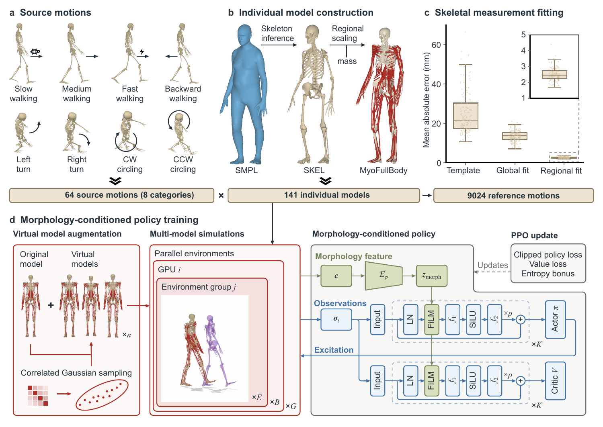

MyoAcross
A generalist policy for muscle-driven control
across individual musculoskeletal models
Tsinghua University
Abstract
Differences in musculoskeletal morphology challenge policy reuse across individual models. Here we present MyoAcross, a framework that combines individual musculoskeletal model construction, morphology-conditioned policy learning and virtual model augmentation to enable muscle-driven reference-motion tracking without individual fine-tuning. Across 31 held-out individual models, MyoAcross achieves 99.24% completion and reduces tracking error by 22.60% relative to an unconditioned multilayer perceptron. Policy reuse extends to models of 22 held-out individuals constructed from single-image shape estimates, measured height and body mass, and, with asymmetry augmentation, to models with unilateral lower-limb shortening. Comparisons with measurements from 120 additional individuals show agreement in vertical ground reaction force waveforms and channel-dependent agreement between simulated muscle activations and electromyography. These results establish a common control framework for comparative simulations of movement across individual musculoskeletal models.
One policy. Different bodies.
From individual anatomy to shared control.

Validation across SMPL, motion capture and image inputs.
Control with a 10% shorter right leg.
BibTeX
@misc{wang2026myoacross,
title = {A generalist policy for muscle-driven control across individual musculoskeletal models},
author = {Wang, Bozhao and Zhu, Yinglei and Li, Zhengqing and Zhang, Zhiyuan and Kang, Weiming and He, Yiheng and Liu, XinJun and Hou, Senhao and Zhao, Huichan and Tang, Xiaoqiang},
year = {2026}
}